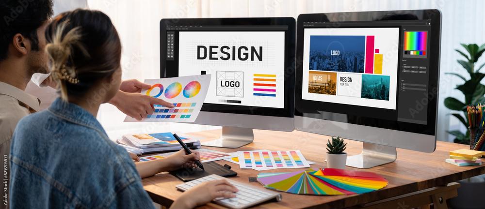

Web development
Responsive sites and web apps that are clear, fast, and ready for real users.
Available for projects and support
Independent IT specialist / Kenya
I build, connect, secure, and repair the systems people rely on — from a clear website to a dependable network.
Good technology should feel clear, useful, and dependable.
01 / About
I’m Tilen Kungu, an IT Specialist and Software Developer with hands-on experience across technical support, full-stack development, system testing, and infrastructure.
My work blends technical skill with creativity. I support the visible layer — websites, applications, identity, and video — as well as the infrastructure that keeps operations moving.
From logistics workflows and inventory platforms to LANs, hardware diagnostics, and CCTV deployments, I turn complex requirements into reliable, usable systems.
Make the complicated useful. Make the useful dependable.
Working principle02 / Capabilities
From first sketch to final fix, I bring software, hardware, infrastructure, and creative problem-solving into one practical conversation.
Responsive sites and web apps that are clear, fast, and ready for real users.
Network design, troubleshooting, VPN access, and practical security improvements.
Planning, installation, configuration, remote monitoring, and support.
Mobile apps, brand visuals, video editing, and interfaces built with intent.
Diagnosis, repairs, upgrades, builds, and maintenance that keep work moving.
Functional, regression, and system-integration testing for workflows where reliability and data accuracy matter.
03 / Services
Need a website, a stronger network, a safer property, or a machine that simply works again? Start with the problem.
Modern websites, landing pages, and practical web apps designed to earn trust and action.
Start a web project ↗Networks, CCTV, device setup, and support for homes, offices, and growing businesses.
Improve your setup ↗Brand identities, graphics, video editing, and application ideas made easier to use.
Make it clearer ↗04 / Selected work
A snapshot of the spaces where technical thinking and creative execution meet.
 Digital / 01
Digital / 01Responsive storefront experience with product discovery, authentication, and order flows.
Discuss a similar project ↗ Infrastructure / 02
Infrastructure / 02VLAN segmentation, firewall rules, VPN access, and smart-device integration.
 Product / 03
Product / 03A focused cross-platform app for tasks, reminders, and everyday momentum.

Creative / 04Visual identity, color, typography, and practical marketing collateral for a startup.
 Motion / 05
Motion / 05Editing, motion graphics, sound design, and color correction for a small business.
 Security / 06
Security / 06Commercial CCTV installation with remote access and motion detection alerts.
Product / 07Secure inventory management platform with real-time logging, duplicate checking, role-based access, scanner-ready entry, and dynamic stock status tracking.
05 / Q&A
Ask about Tilen’s experience, services, the LottoOps platform, or how to start a project. The assistant is grounded in the information published on this site and the supplied resume.
06 / Trust
“Tilen delivered an exceptional web solution for our startup. Their attention to detail and ability to understand our needs was truly impressive.”— Client A, Tech startup
“The network infrastructure significantly improved our office efficiency and security. Their expertise is top-notch.”— Colleague B, IT department
07 / Contact
Have a project in mind, a setup that needs attention, or a problem you have been putting off? Send a note and let’s make the next step clear.
01 Clear, practical recommendations
02 Friendly support from first idea to final delivery
03 WhatsApp available for a quick conversation